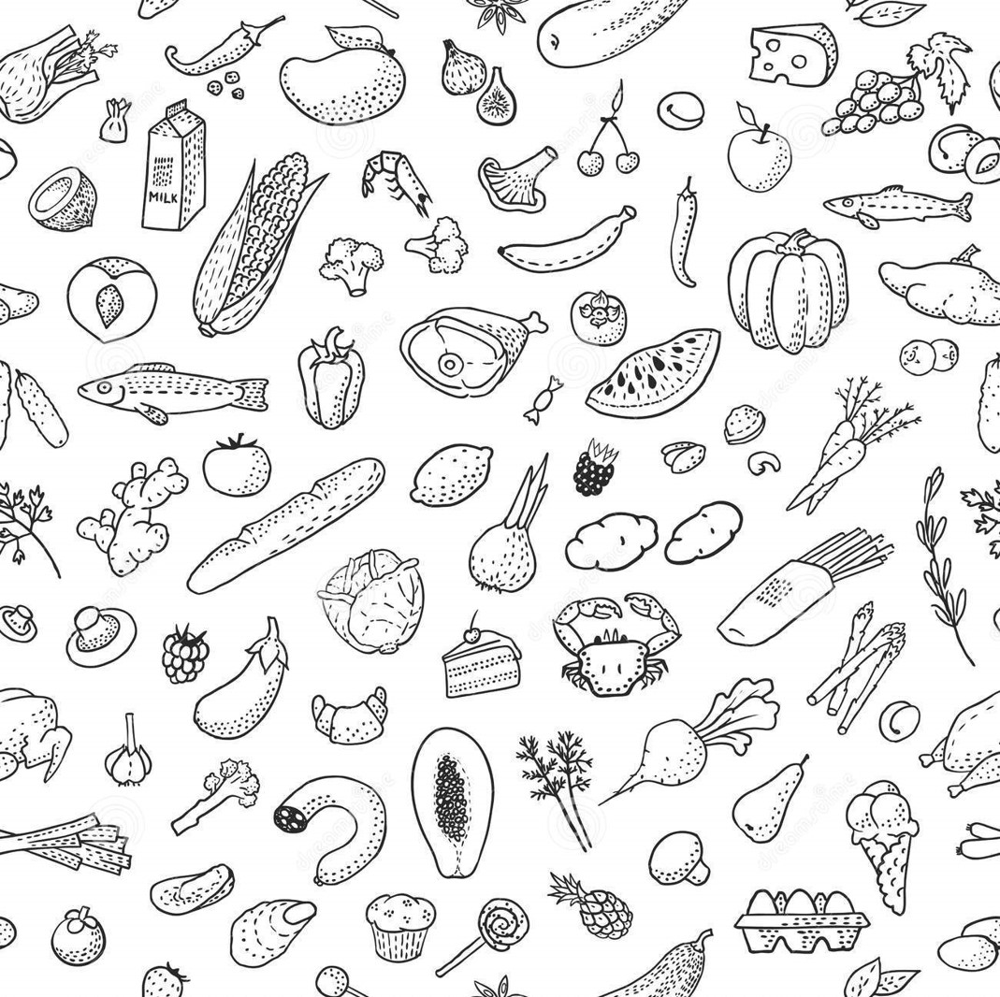

TestSoundLibgdx

intro
kodingan
package com.udacity.gamedev.firstdemo;
import com.badlogic.gdx.Gdx;
import com.badlogic.gdx.audio.Music;
import com.badlogic.gdx.audio.Sound;
public class SoundEffect {
public static Music music;
public static Music suarajalan;
//public static Sound suarajalanstop;
public static Music suarapingsan;
public static void load() {
music = Gdx.audio.newMusic(Gdx.files.internal("backsound1.mp3"));
music.setVolume(0.1f);
music.setLooping(true);
suarajalan = Gdx.audio.newMusic(Gdx.files.internal("stepforest.mp3"));
suarajalan.setVolume(0.9f);
//suarajalanstop=Gdx.audio.newSound(Gdx.files.internal("data/stopforest.mp3"));
suarapingsan = Gdx.audio.newMusic(Gdx.files.internal("pingsan.mp3"));
}
public void playMusic(){
music.play();
}
public void suarajalan(){
suarajalan.play();
}
public void suarajalanstop(){
suarajalan.stop();
}
public void suarapingsan(){
music.stop();
suarapingsan.play();
}
}
Hasil
Sampai tulisan ini dibuat backsound telah berhasil diaktifkan
Sound ketika melangkah juga sudah bisa
Sound ketika hungrybar habis juga sudah berhasil